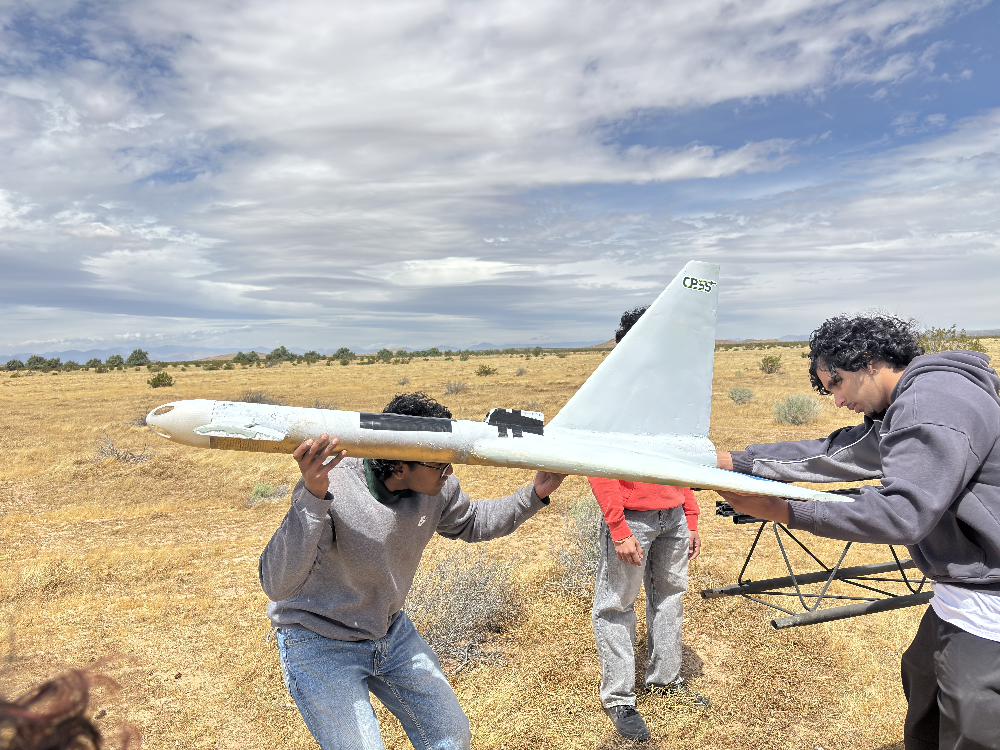
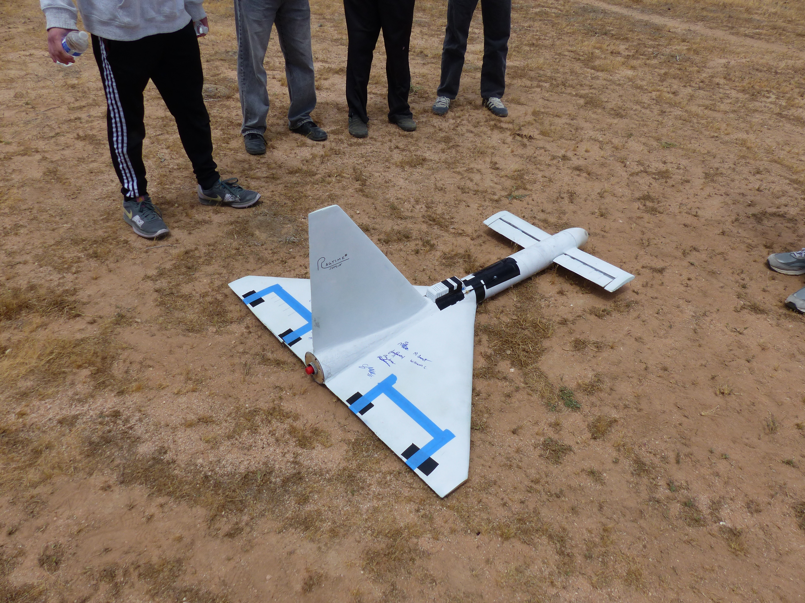
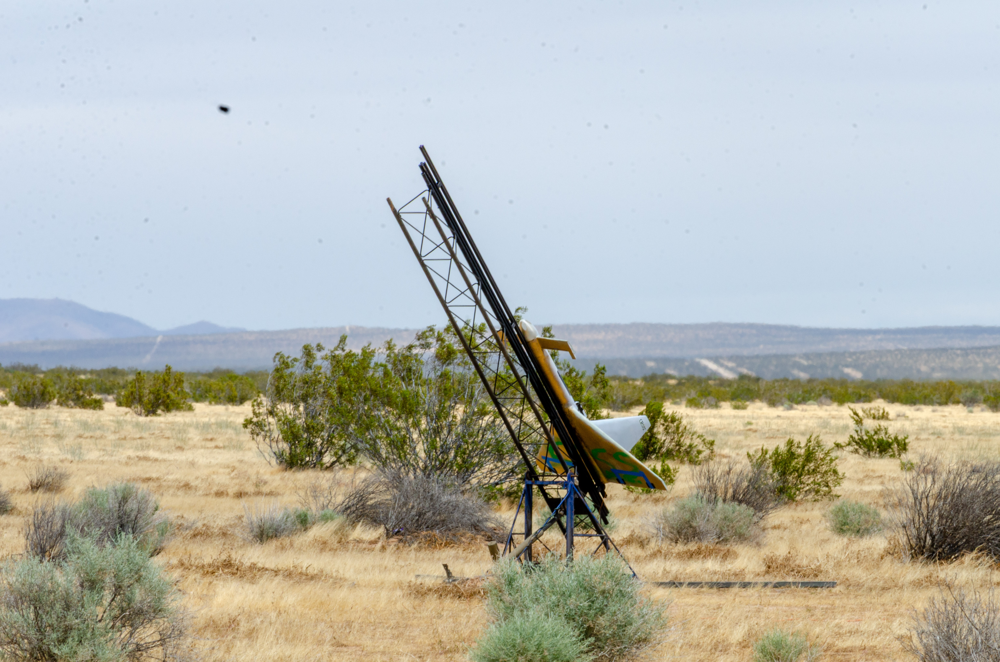
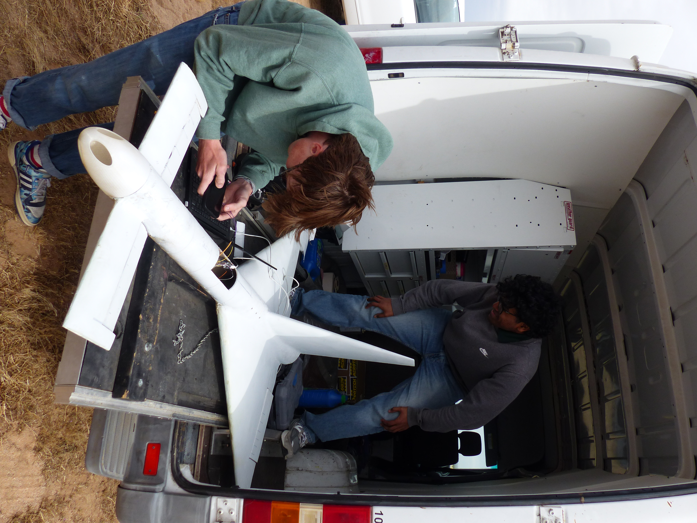
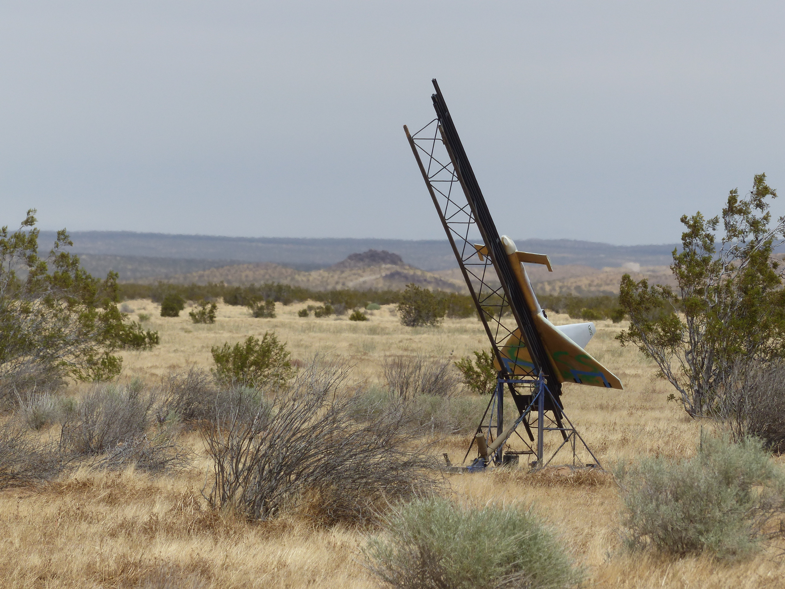
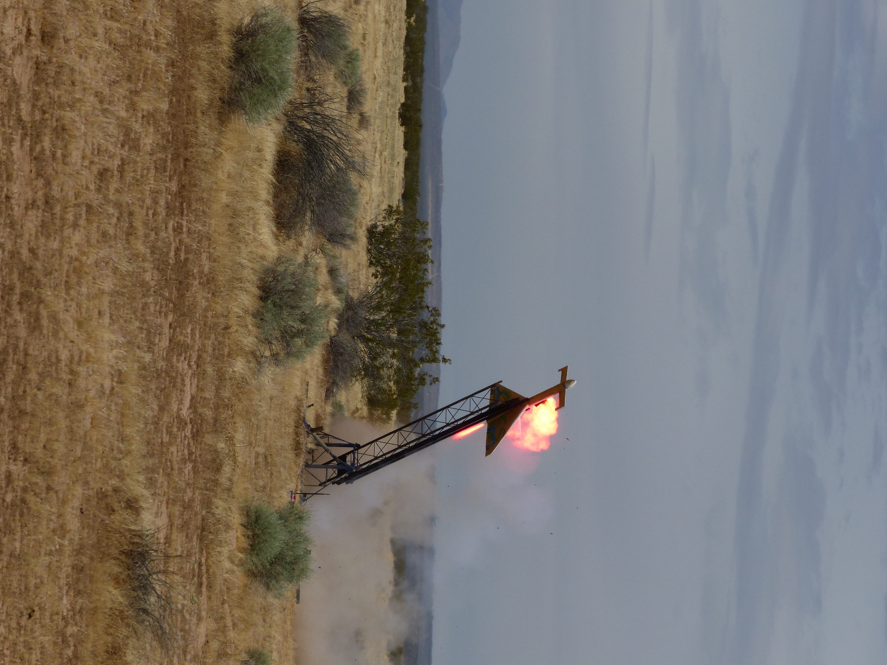

Recoverable Booster Program
CPSS's recoverable booster project is designing a multistage vehicle equipped with a centerstage supported by two twin rocket-boosted, radio-controlled gliders. This project seeks to create a fleet of reusable and reliable boosters capable of supporting any future centerstage vehicles designed by the club.

Specifications
- Booster thrust
- 350.25 lbf
- Booster launch weight
- 19.5 lbs
- Centerstage thrust
- 514.6 lbf
- Vehicle launch weight
- 62.5 lbs
- Vehicle apogee
- 5597.1 ft
- Booster engine cutoff
- 2.043s post ignition
- Main engine cutoff
- 2.266s post ignition
- Time to apogee
- 16.5s post ignition
Background & Rationale
Rocket launches require a tremendous amount of capital, and oftentimes launch vehicles are built without reusability in mind. But since the industry is rapidly evolving to build recoverable launch vehicles, CPSS has dedicated a solid-rocket program to design, build, and launch its very own fleet of recoverable rocket-boosted, radio-controlled gliders.
Key Mission Goals
Progress & Current Work
The airframe (wings, canards, and vertical stabilizer) were redesigned at the beginning of this year to be smaller while producing more lift. Based on manufacturing the booster from last year, new manufacturing techniques/processes have been created and are actively being tested.
The main focus of the team this year is to design the connection and separation system of the boosters to the centerstage. The team is testing four separation mechanisms, and based on the reliability, effectiveness, and weight, a final mechanism will fly on the vehicle.
Development Timeline
Single-booster flight attempt
The team designed, manufactured, and launched a single rocket-boosted, radio-controlled glider. The launch was unsuccessful due to motor mis-ignition.
Milestone details
Critical Design Review
Present the design for feedback before beginning manufacture.
Milestone details
Manufacturing
Begin manufacturing after incorporating design review feedback.
Milestone details
Multistage launch
Launch the multistage vehicle with twin recoverable boosters.
Milestone details
Images & Captions

Video
[Booster video caption]
Data & Telemetry Curves
Choose a published test recording to explore its measurements.
Test data not yet published.
Documentation & Publications
Links & Repositories
[Add confirmed external resource links here]
Project Gallery




